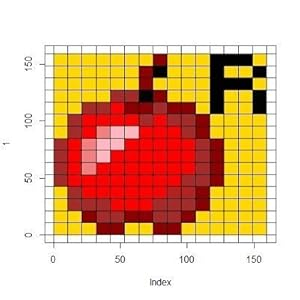

👋 はじめまして
エンジニアのRinga_hyjです。主にバックエンド開発とクラウドインフラを扱っています。 データサイエンスと機械学習に情熱を注ぎ、技術を通じて価値を創造することに取り組んでいます。
このブログでは、日々の学びや技術的な知見、プロジェクトの経験などを共有していきます。
技術スタック
プログラミング言語
フレームワーク・ライブラリ
クラウド・インフラ
データサイエンス・ML
職歴
バックエンドエンジニア
XXX株式会社
2020年 - 現在
- 大規模データ処理基盤の設計・開発
- 機械学習モデルの本番環境への展開
- マイクロサービスアーキテクチャの導入
フルスタックエンジニア
YYY株式会社
2018年 - 2020年
- Webアプリケーションの開発
- CI/CDパイプラインの構築
- チーム開発のリーディング
最近の興味分野
マイクロサービスアーキテクチャ
サーバーレスコンピューティング
機械学習と AI
DevOpsプラクティス
連絡先・リンク
このブログについて
このブログでは、主に以下のようなトピックについて書いていきます：
- 技術的な知見や学び
- プロジェクトでの経験
- エンジニアとしてのキャリア
- 新しい技術のキャッチアップ
- データサイエンス・機械学習のチュートリアル
定期的に更新していく予定です！